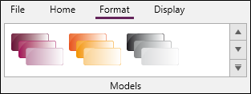
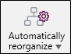
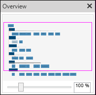
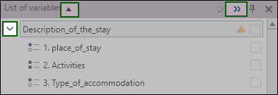

QUESTIONNAIRE design
The questionnaire design involves defining and setting up the data collection tool (questionnaire, interview guide, observation grid, etc.). It takes place in four main stages: modeling the study, writing the questionnaire, setting the parameters of the controls or filters, defining the presentation or formatting options.

-
The Study modeling consists of creating a diagram that summarizes the study structure.
 MODEL THE STUDY
MODEL THE STUDY
The Model my study environment allows you to develop a summary diagram of the survey. Diagram modeling is not a mandatory phase, but it is very useful during the first phase of the survey to structure the ideas and objectives of the project. It also facilitates exchanges between the various parts of the study, by proposing the detailed plan of the survey.
How to get access?
-
From the home panel.
-
Click on the Questionnaire design stage.
-
From the Home banner, Direct access section, click on Diagram.
WORK ENVIRONMENT
The environment is made of:
-
1 A central work area.
-
2 A horizontal ribbon (banner) with three tabs (Home, Format, and View).
-
3 A lateral explorer with three windows (New element, List of variables, Languages).
-
The New Item window in the explorer contains the objects needed to produce the diagram: section, question, note.
-
The List of variables window contains the sections (or sub-sections) and questions that have been added to the work area. The arrow in front of each part allows you to expand/collapse its content (show/hide the questions that make it up).
-
The Languages window allows you to change the language of the survey displayed, in the case of a multilingual survey.
NOTE: To change the name of an object in the work area, click on the text and type in the new name. Although it is not its primary functionality, the modeling environment also allows you to set up questions.
To do this, right-click on a part or question and select Edit.BANNER
The Model my study environment banner is composed of three tabs (Home, Format, Display).
Home
The Home tab contains the most frequently used functions in the diagram environment.
-
The Direct access group includes functions to open the home panel or other environments.
-
The Clipboard group offers the cut, copy and paste functions.
-
The Selection group allows you to modify the characteristics of a selected object.
-
The Navigation group allows you to define display conditions or cross-references.
-
The Library group allows you to use predefined questions.
-
The Tools group includes functions for transforming questions into tables, dissociating objects or grouping them in the same part, in the same table.
-
The Editing group offers find, replace and delete functions.
Format
The Format tab proposes the functions allowing to personalize the scheme produced in the working area.

-
The Models group allows you to define the color of the elements of the diagram.
Display
The Display tab provides a set of functions to better manage the content of the work area.
-
The View group allows you to hide certain objects (for example hide the questions in order to keep just the titles of the part) or to show them.
-
The Show/Hide button allows you to choose the elements to display in the working area concerning the variables and the objects.
-
The Reorganize group offers three options of presentation: Star-shaped, horizontal-tree and vertical-tree organizations.
-
The Display group allows you to show off a precise surface of the working area ( Display miniature) and to display languages in the explorer and to navigate from one to the other (in the case of multilingual survey).
-
The Zoom group allows you to change the size of the scheme.
Access to the operating modes
Structure the diagram
The step of modeling the study is not mandatory, but it allows you to structure the ideas and the content of the study through the implementation of a very meaningful graphic representation (diagram). To do this, you will have to create elements (parts, questions), the aim being to create a diagram corresponding to the questionnaire plan.
Start by defining the general structure of your study by creating the sections that make it up. To do this, drag the Part object from the explorer (on the left) to the work area. To expand the parts, add sub-parts (if any), and questions by dragging them from the explorer to the work area. However, try to put them momentarily on the part to which they belong to create a physical link between the objects.
Each time a new item is created, it is necessary to name it. To do this, click on the default text written in white and rename the element.
Once the sections and questions have been created, the "+" or "-" button (at the top right of each "section" element) allows you to unfold or fold the section (display or hide the questions that make it up).
At any time, you can add notes (reminders) to collect comments that will accompany you throughout the design process.
In order to structure the questionnaire, it is important to know that a part can be linked to another part, it then becomes a sub-part; a question can be linked to a section or a sub-section.
To link two items, drag a question (or a section) onto the section you want it to be linked to (a green shadow appears to indicate that a link can be created). Drop the item to create the link.
The structure of the questionnaire can also be managed via the Variable List panel (on the left of the work area). It is possible to prioritize the parts and questions in relation to each other. To do so, you just have to drag and drop an item in relation to the others to define the logical sequence of your sections and questions.
NOTE: By default, the sequence of the questionnaire is structured in the order in which the different elements were added, regardless of the reorganization that may have been made in the work area.
Manage elements (group, transform, dissociate)
Group
The function Group allows you to aggregate several sections and/or questions in one section.
Group elements in a new section
-
Select the elements to group.
-
Go to the Home tab, then Tools group.
-
Click on Group, then In a new section.
If the selected questions already belong to a section, the Group function creates a sub-section. The links between the existing part and the new subsection are created automatically.
Group elements in a new table
The Group function also allows you to aggregate a set of questions, sharing the same modalities, in a question table.
-
Select the questions to be grouped in a table.
-
Go to the Home tab, then Tools group.
-
Click on Group, then In a new table.
Dissociate
The function Dissociate allows you to withdraw questions from a chosen section. This section is therefore canceled and the questions that make it up move a step higher in the rank of the questionnaire.
-
Select the section with the elements to dissociate.
-
Go to the Home tab, then Tools group.
-
Click on Dissociate.
The Dissociate function also allows you to dissociate a table of questions. The online questions then become full-fledged questions, with the same modalities they shared in the table.
Transform
The function Transform allows you to convert an element into another. An element may be transformed In section, In question, In table.
Transform in section
This function transforms a question into a section. The modalities of the question therefore become questions of the created new section.
-
Select the question to transform.
-
Go to the Home tab, then Tools group.
-
Click on Transform, then In section.
You can also transform a table of questions in section. In this case, the title of the table becomes the title of the section. The questions online become questions of the section with the same modalities they shared in the table.
Transform in question
This function allows you to transform a section in question. If the section involves questions, these questions become the modalities of the created new question.
-
Select the question to transform.
-
Go to the Home tab, then Tools group.
-
Click in Transform, then In question.
Transform in table
This function allows you to transform a section or a question in a question table.
When you transform a section in a question table, all the questions that make up your section are regrouped online in a table with modalities of common answers. The title of the section then becomes the title of the table.
When you transform a question in table, the title of the question becomes the title of the table. The modalities become the questions online with modalities by default ("Modality1", "Modality2").
-
Select the section or the question to transform.
-
Go to the Home tab, then Tools group.
-
Click in Transform, then In table.
Present the diagram
Once the links between the elements have been created, a reorganization tool is available to make the questionnaire model more readable. The sections and questions can be reorganized in three different ways: In a star-shaped, In a horizontal tree, In a vertical tree.
-
In the banner, click Display.
-
Click on Automatically reorganize.
-
Select the type of reorganization wished.

Use the overview
The miniature allows you to visualize rapidly the whole diagram.
-
In the banner, click Display.
-
Click on Display overview.
The zoom scale at the bottom of the overview allows you to quickly adjust the desired zoom for the working area (the zoom can also be adjusted from the banner, View tab).
The pink rectangle represents the active view.

-
-
Design the questionnaire means defining the questions to be asked.
-
Set up the controls and filters consists in setting up the script (the scenarios of the questionnaire).
-
Set up of the presentation options consists in choosing the visual format according to which the components of the questionnaire will be displayed (questions, tables, images, ...).


After setting the study design in the modeling environment, it is necessary to detail the content in the questionnaire design environment.
How to access ?
-
From the Home panel, click on the Questionnaire design stage.
-
Click on Design my questionnaire.

The environment is composed of:
-
A central work area.
-
A horizontal ribbon (banner) with eight tabs (Home, Insert, Forms, Models, Controls, Distribution, Languages, Display).
-
A lateral explorer with four windows (Layout, List of variables, Forms).
-
A modal that allows you to edit the visual presentation of objects (questions, text, etc.) in real time.
To facilitate the management of survey elements, Sphinx iQ3 now offers two complementary browsers: a browser to view the list of variables and a browser to view the form pages.
To switch from one explorer to the other: in the left-hand side explorer, use the following tabs "List of variables" and "Layout":

|
List of variables |
Layout |
|---|---|
|
Allows you to see all the variables (questions) in your survey |
Allows you to see the questions present on the pages of your form |
|
This list can be enlarged in the work area by using the double arrow at the top right of the window. In addition, the arrow at the top left of the window can be used to display either only the section titles or both the section titles and the questions related to them. Displaying only the part titles gives a global and synthetic view of the long questionnaires and makes them easier to handle. A more precise display of each part can be set up thanks to the arrows in front of each part title.
 |
The advantages
|
|
Points to watch out for:
|
|


The Forms window shows all the questionnaires that have been created and allows you to choose the one you want to work on.
Dialog boxes
How to access the assistant:
-
To create a new question (table): in the Insert tab, click on the Question or Table question button.
-
To modify an existing question (table): in the work area, put the cursor on the Question object and click on .
This assistant proposes to create a question or a table and to define its parameters.
-
The Definition tab allows you to specify the question or table name, the short name (variable name), the short name (Optional), the question type (questions in the case of a table) and the additional options according to the latter.

-
The Controls tab allows you to hide the question or the table in a form (the interest of this option lies in the creation of several forms that do not have the same structure). It is also possible to set up a presentation condition allowing the question/table to be displayed according to a given profile.
The presentation options allow you to make the answer mandatory (the respondent will not be able to continue typing until they have answered the question), to set up a referral (skip a set of questions according to the chosen profile and go directly to another question). Whether the answer is compulsory or whether it calls for a referral, it is possible to define a personalized alert message. This message can either inform the respondent about the obligation to answer the question, or inform them that they will skip a set of questions because their profile does not match.
In the case of a closed or scale question, it is possible to act on the display of the modalities, either by setting up conditions of presentation of the modalities according to a profile, or by establishing a random rotation of the modalities. In a closed question, the response modes proposed in first position are more likely to be chosen by the respondents. The random presentation of terms makes it possible to avoid this "anchoring effect" and thus eliminate a potential source of bias.

-
The Calculation tab allows you to calculate the variables and to process the modalities. For the closed questions and scales, it is proposed to assign weights to the modalities and to put them in categories.
-
The option Define a weight consists in assigning a numerical value (a weight) which allows at the time of the analysis to process the scales in numbers and to set up indicators (average, score, etc.). Note that it is possible, for question tables, to assign a different weight for each line.
-
The categories setting is used to predict the classes in which certain modalities will be grouped.
EXAMPLE: "Non-alcoholic beverages'' for water, fruit juice, tea, coffee, etc.
Setting the variable as automatic is useful when you want the response to be identical to the previous observation.
Finally, it is possible to set up a calculated variable. The most common calculations are average, sum, duration and age. For more information on programming calculation formulas, refer to the programming language in Basic.
Note that for a table, only the options for the treatment of modalities are available.
-
-
The Styles and Font tabs allow you to define the visual representation, content, input area, size, color and also the spacing between rows for tables. These tabs are now displayed on the right side of the form, allowing you to perform real-time editing of your questions.

Learn more about questions presentation parameters.